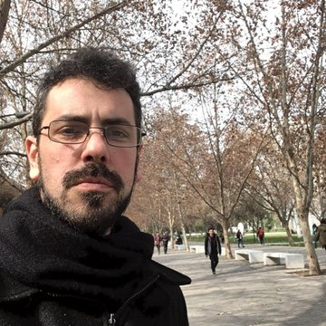

DirectorDr. Martín Pérgola
El grupo de investigación de didáctica de la química está dedicado a trabajar problemas específicos de la enseñanza de la química y su relación con dificultades en el aprendizaje de dicha disciplina. Las Principales líneas de investigación tienen que ver con la contextualización de la química y su relación con la modelización científica escolar, el uso de lenguajes y representaciones para comunicar y enseñar química, y el análisis de obstáculos epistemológicos ligados a la enseñanza de la química, en particular aquellos relacionados con la química biológica.
Integrantes del grupo
Dr. Martín PérgolaDirector
Natalia SabatiniInvestigadora en formación
Fabricio Freije GarcíaInvestigador en formación
Nicolás LaboniaInvestigador en formación
Santiago CampagnaInvestigador en formación
Victoria MartínezInvestigadora en formación
Colaboraciones internacionales
Ainoa MarzabalPontificia Universidad Católica de Chile
Rafael Yecid Amador-RodríguezUniversidad del Norte - Colombia
Natalia Ospina QuinteroUniversidad Simón Bolívar - Colombia
Selección de publicaciones recientes
- Pérgola, M., Pérez, G. Epistemological obstacles in teaching and learning cellular respiration. Found Chem 27, 319–338 (2025). https://doi.org/10.1007/s10698-025-09538-0
- Pergola, M. y Revel Chion, A. (2024). Una propuesta de abordaje multirreferencial del HACRE. Posibles vinculaciones entre química y salud. Góndola, enseñanza y aprendizaje de las ciencias, 19(2), 273-289. https://doi.org/10.14483/23464712.21444
- Pérgola, M. S., & Adúriz-Bravo, A. (2026). Modelización en contexto en la enseñanza de la química en secundaria. Enseñanza De Las Ciencias. Revista De investigación Y Experiencias didácticas, 44(1), 25–44. https://doi.org/10.5565/rev/ensciencias.6458
- Pérgola, M. y Pérez,G. (2023). La reflexión en la práctica docente en la enseñanza de Ciencias Naturales en primaria. Un estudio desde la Didáctica de las Ciencias Naturales. Revista de Educación en Biología, 26 (2), 6-23.
- Pérgola, M. y Sabatini, N. (2026). Química en Contexto: intoxicación crónica por arsénico (HACRE) como problemática educativa socioambiental, Educación Química, enero-marzo 2026, 37(1). http://dx.doi.org/10.22201/fq.18708404e.2026.1.91545.